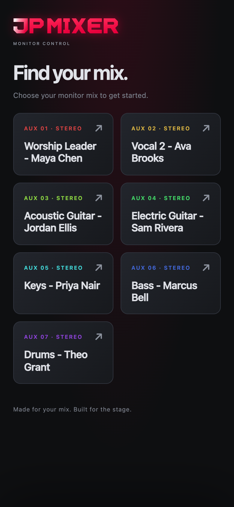
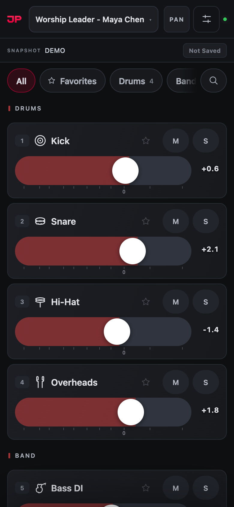
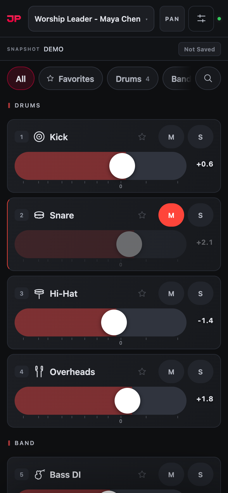
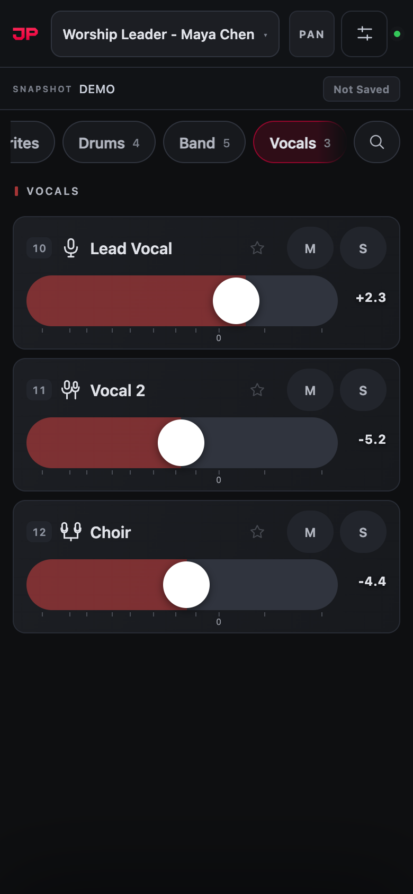
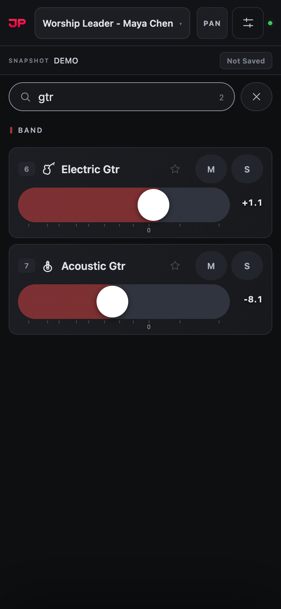
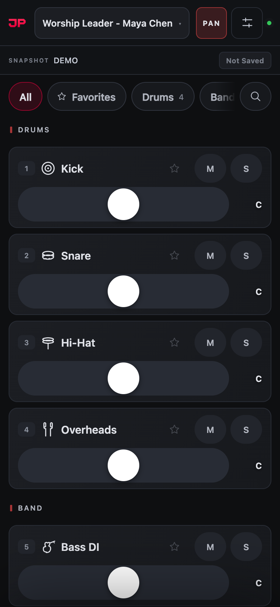
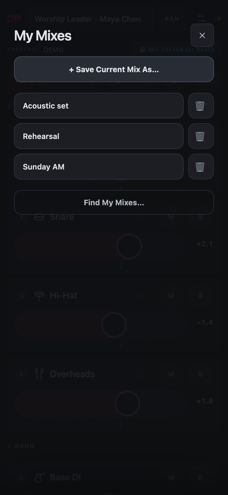
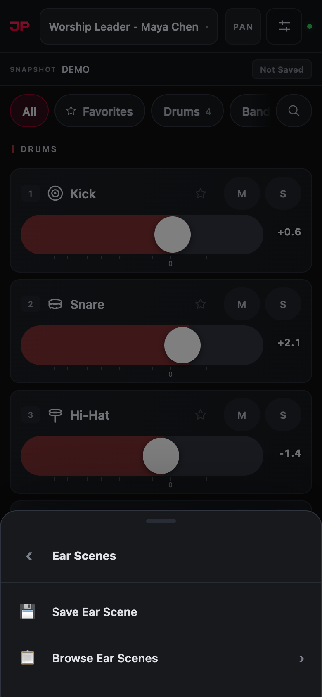
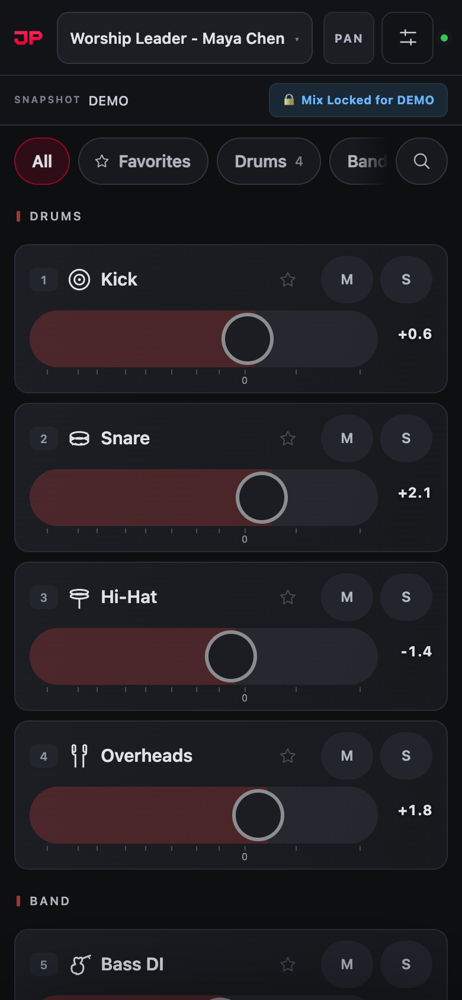
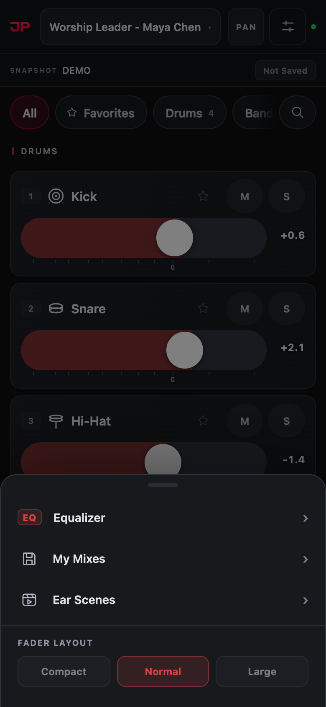

1Get connected
- Join the stage Wi-Fi. Your sound team will tell you which one. Mobile data won’t work.
- Open your browser (Safari on iPhone) and type the address your sound team gives you, for example
192.168.1.20. - Tap your name in the list of mixes. That’s it: you’re mixing.

Pick the mix with your name on it
Each button is one monitor mix. If your sound team uses Planning Center, your name is already on yours, like Keys - Priya Nair.
Next time you open the address, your phone goes straight back to the same mix.
On iPhone or iPad, tap Share, then Add to Home Screen. JPMixer then opens full screen from its own icon and stays connected when your screen locks.
2The screen at a glance
Everything on the screen, top to bottom. Each channel in your mix has its own card.

1 2 3 4 5 6 7 8 9 10 11 12 13- Top of the screen
- 1Your mixWhose mix you’re on. Tap it to switch to a different mix.
- 2PANShows pan sliders instead of levels, for stereo in-ears.
- 3MenuMy Mixes, Ear Scenes, fader size, and EQ if your sound team allows it.
- 4Connection lightGreen means you’re connected.
- 5SnapshotThe song or scene the sound desk is on right now.
- 6Ear Scene buttonWhether your mix is saved for this song. See Ear Scenes.
- 7GroupsShow only Drums, Vocals, your Favorites, and so on. Swipe for more.
- 8SearchFind a channel by name.
- On each channel
- 9ChannelIts number, icon and name.
- 10StarAdds it to your Favorites.
- 11M and SMute it, or solo it, in your mix only.
- 12FaderSlide right for more, left for less.
- 13LevelIn dB. 0 is the middle mark; tap the number to type an exact level.
3Mixing a channel

Snare muted: M lights red and the fader dims
Move a fader
- Drag sideways on a fader to change the level: right is louder, left is quieter.
- Swipe up and down to scroll through your channels. That never moves a fader, so you can scroll safely.
- Tap the level number to type an exact level, like
-6, or-inffor off.
Mute and solo
- M mutes that channel in your mix. Tap again and it comes back at exactly the same level.
- S solos it: you hear only that channel. Solo a few to hear just those. Tap again to hear everything.
Double-tapping a fader turns that channel all the way off (−∞). If a channel disappears from your ears, look for a fader pulled all the way left and drag it back up.
Everything you do here changes your mix only. You can’t affect the main speakers or anyone else’s ears.
4Finding channels

Tap a group to see just those channels

Search finds any channel by name
- Groups: tap Drums or Vocals to see only those channels. Tap more than one to see them together, and All to see everything again.
- Favorites: tap the star on the channels you adjust most, then tap ★ Favorites to see just those.
- Search: tap the magnifying glass and type part of a name. Search always looks through every channel.
Your mix may open on the groups your sound team chose for you, such as Drums and Click for the drummer. Your own choice is remembered on your phone.
5Pan (stereo in-ears)

PAN on: each slider places a channel left or right
If your mix is stereo, tap PAN at the top. Each channel’s slider now moves it left or right in your ears. C means centre.
Tap PAN again to go back to levels. Mixes marked MONO in the mix list have no pan.
6Saving your mix: My Mixes

Menu → My Mixes
Save a mix you like and bring it back any week, on any mix.
- Tap the menu button, then My Mixes.
- Tap + Save Current Mix As…, give it a name like “Sunday AM”, and add your name.
- Next time, open My Mixes and tap the name to load it.
New phone, or your mixes are gone? Tap Find My Mixes… and search for your name. JPMixer keeps a copy of every saved mix.
7Ear Scenes: a mix for each song
An Ear Scene is your mix saved for one song (one snapshot on the sound desk). When the desk goes to that song again, your mix for it comes back by itself.

Menu → Ear Scenes → Save Ear Scene

Saved: the mix locks so it can’t be bumped
- While the snapshot shows the song you want, set your mix.
- Tap the menu button, then Ear Scenes, then Save Ear Scene.
The button next to the snapshot name tells you where you stand:
| Not Saved | No Ear Scene for this song yet. |
| 🔒 Mix Locked for … | Saved and locked: faders won’t move if you bump them. Tap the button to unlock. |
| 🔓 Unlocked — Editing | You can change the mix. Tap again to lock it. |
| ↺ Changed Since Save | You’ve changed it since you saved. Tap to go back to the saved mix, or choose Update Ear Scene in the menu to keep the new one. |
Browse Ear Scenes lists every song you’ve saved, so you can fix next week’s opener without the desk being on it. If you don’t see Ear Scenes at all, your sound team has turned them off.
8More in the menu

The menu
- Fader Layout: Compact, Normal or Large. Large is easier with gloves or on a small phone.
- Equalizer: shape the tone of your whole mix, if your sound team has turned EQ on for it. Tap a band on the curve, then adjust its frequency, gain and width.
- My performer: if your church uses it, choose your name once and your phone opens your mix by itself every week.
9Quick help
- The screen says Reconnecting…
- Your phone lost the Wi-Fi for a moment. Wait a few seconds; it reconnects by itself and keeps your mix. If it doesn’t, check you’re on the stage Wi-Fi.
- A fader won’t move
- Your mix is locked to its Ear Scene. Tap the 🔒 button at the top to unlock it. And remember to drag sideways, not up and down.
- A channel is missing
- Tap All to clear any group, and clear the search box. If it’s still missing, ask your sound team; they may have hidden it.
- I can’t hear a channel
- Check its M isn’t red, no other channel is on S solo, and its fader isn’t all the way left.
- My mix isn’t in the list
- Some mixes only open from their own link. Ask your sound team for yours.
- My saved mixes are gone
- Use the same address as before, then Menu → My Mixes → Find My Mixes… and search for your name.